Material Platforms
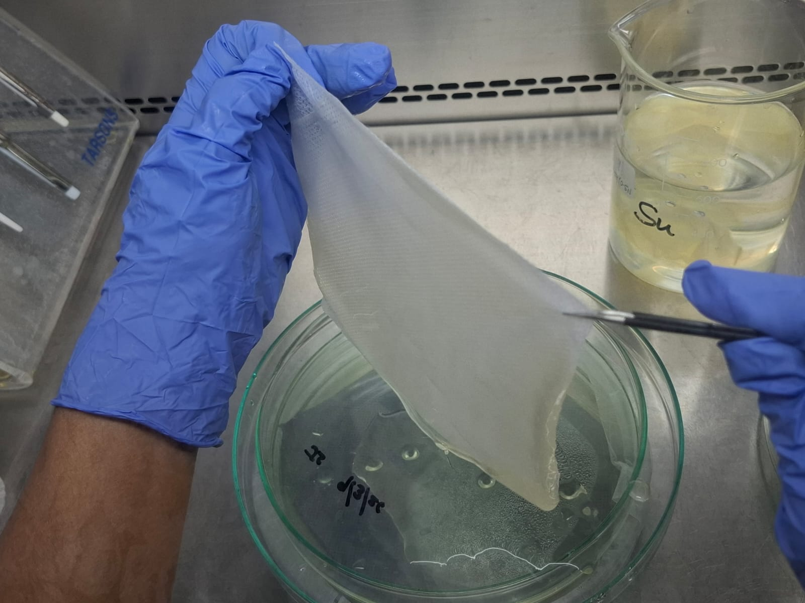
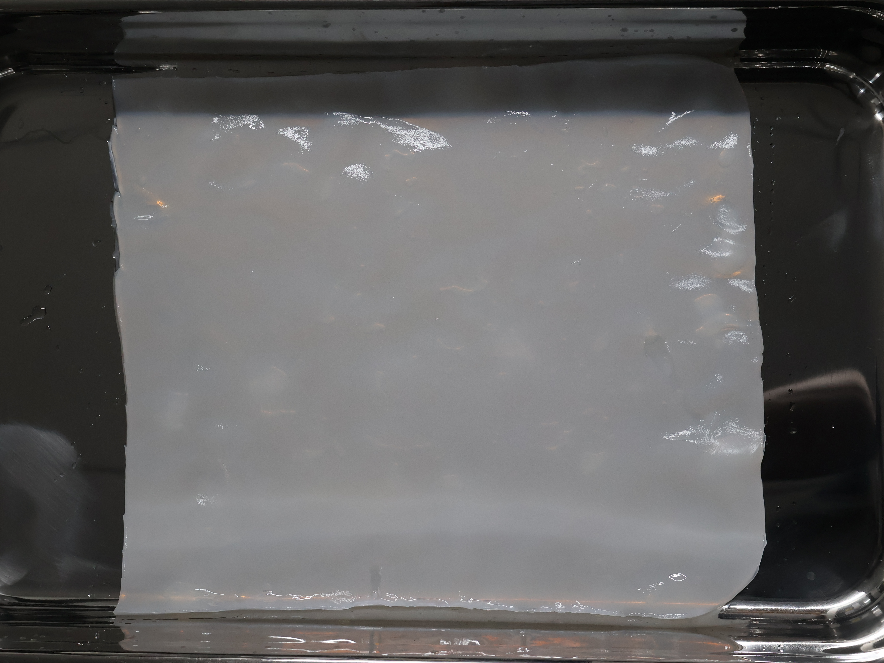
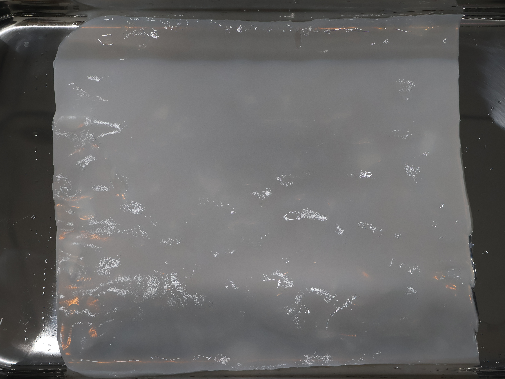
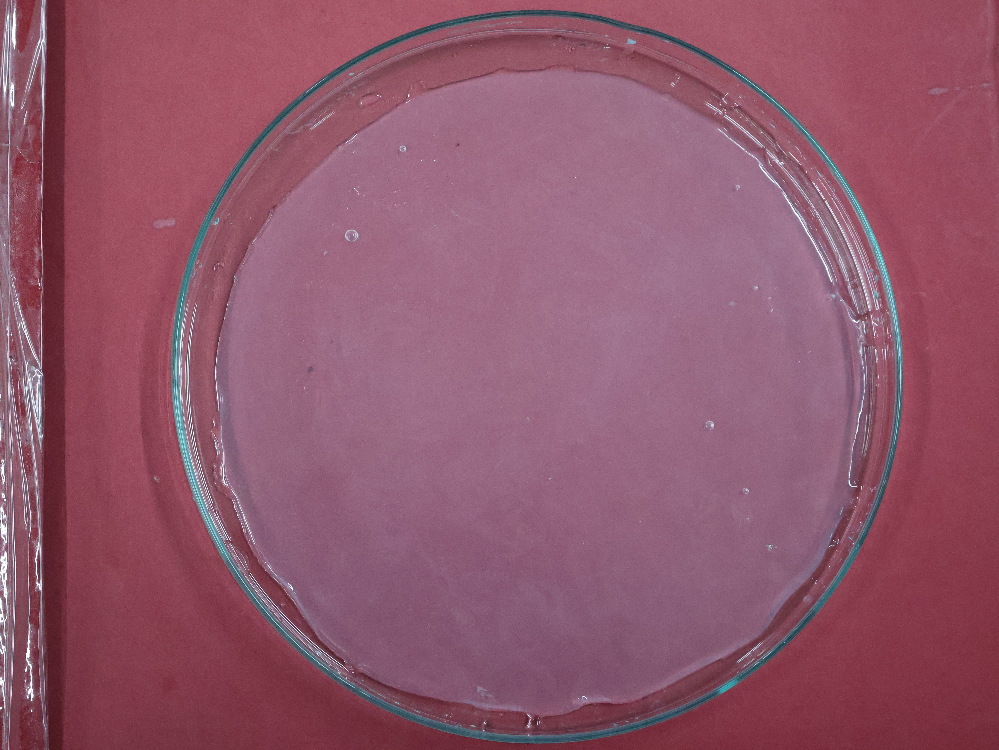
Bacterial Cellulose Hydrogel
High-purity, water-rich nanofibrous material
Engineered for versatile applications across healthcare, advanced materials, and sustainable product development. Composed entirely of cellulose with a water content exceeding 95%.
- High Water Content: >95% water, hydrogel-like structure.
- Nanofibrous Architecture: Fibres ranging 20–60 nm in diameter.
- Mechanical Flexibility: Withstands tensile strains up to 30%.
- Thermal Stability: Stable at temperatures up to 200°C.
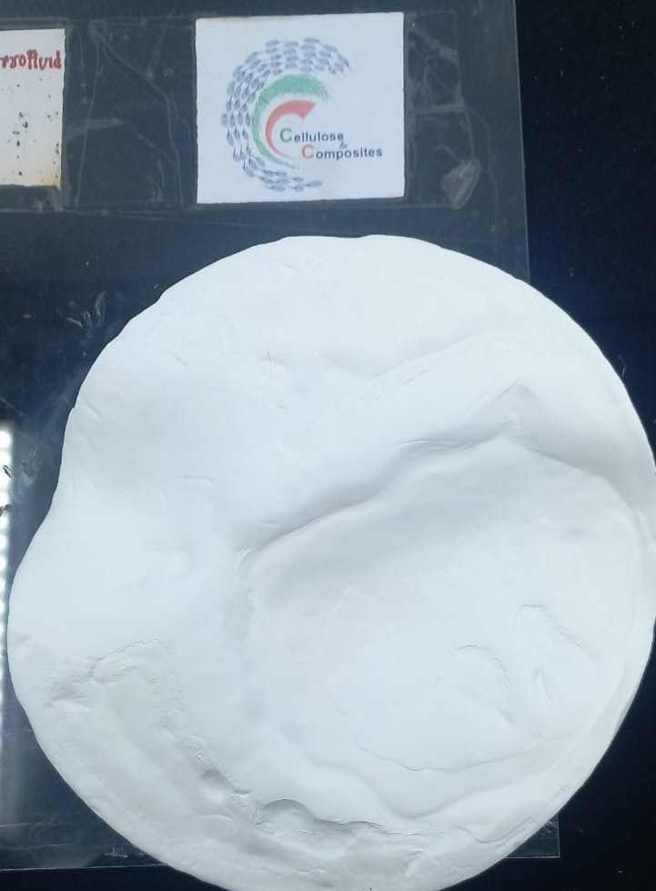
Dried Sheets & Composites
Engineered Porosity. Customizable Structure.
Lightweight materials whose density, porosity, and rehydration behaviour can be tailored through controlled drying methods (oven-dried or freeze-dried).
- Oven-Dried: Dense, compact structures.
- Freeze-Dried: Highly porous network, reswellable.
- Versatile Use: Filtration, sustainable packaging, wound-care.
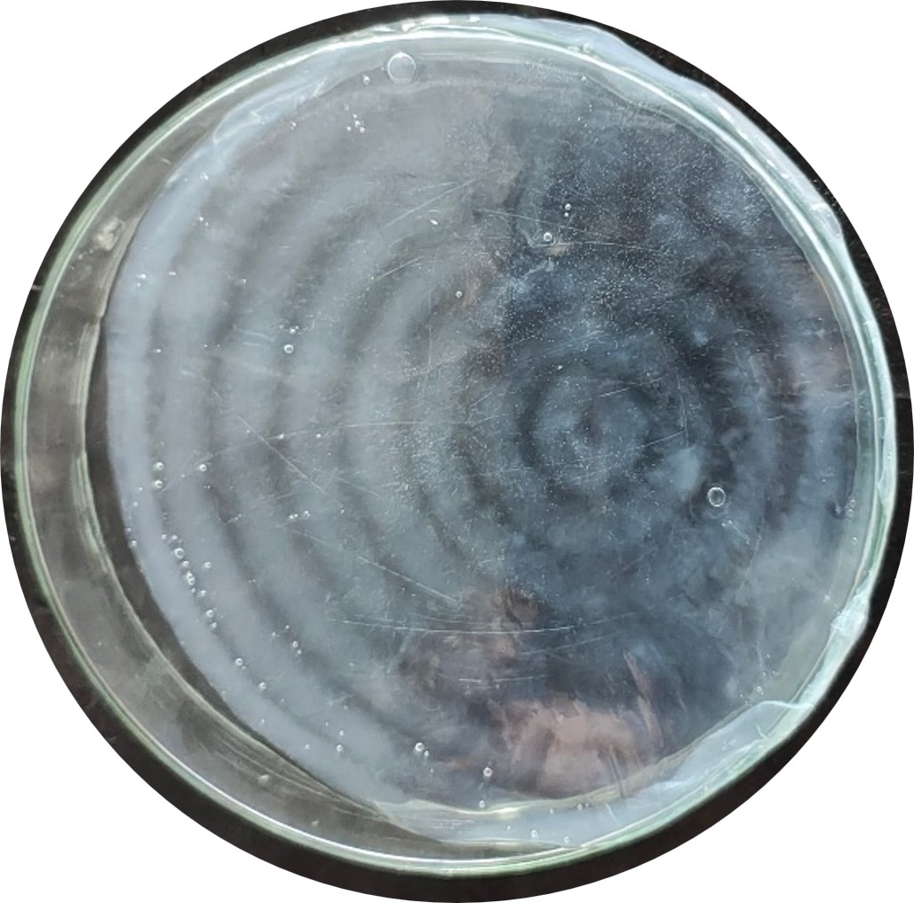
Patterned Bacterial Cellulose
Engineered Topography. Nature-Inspired.
Combines a nanofibrous network with customizable surface architectures via imprinting. Ideal for applications requiring spatial organization and microscale features.
- Custom Geometries: Tailored feature sizes and patterns.
- Templates & Replication: Transfer surface features.
- Microfluidics: Structured substrates for fluid handling.

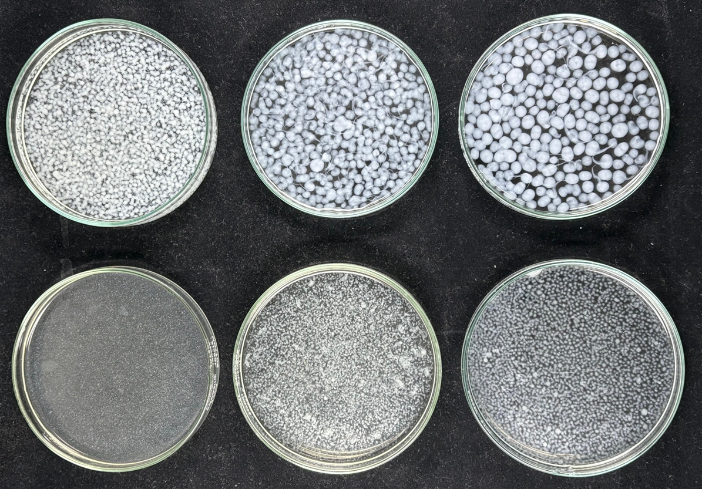
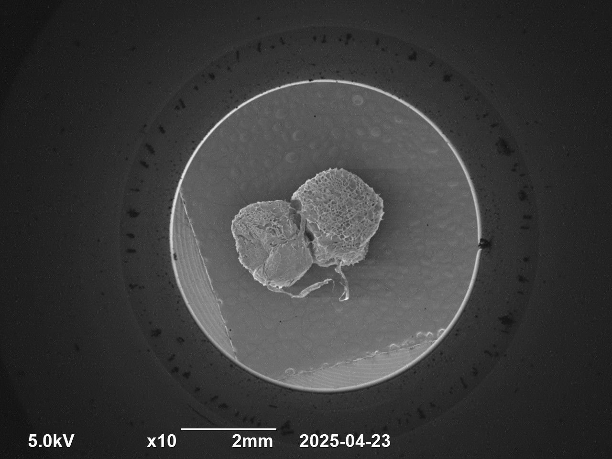
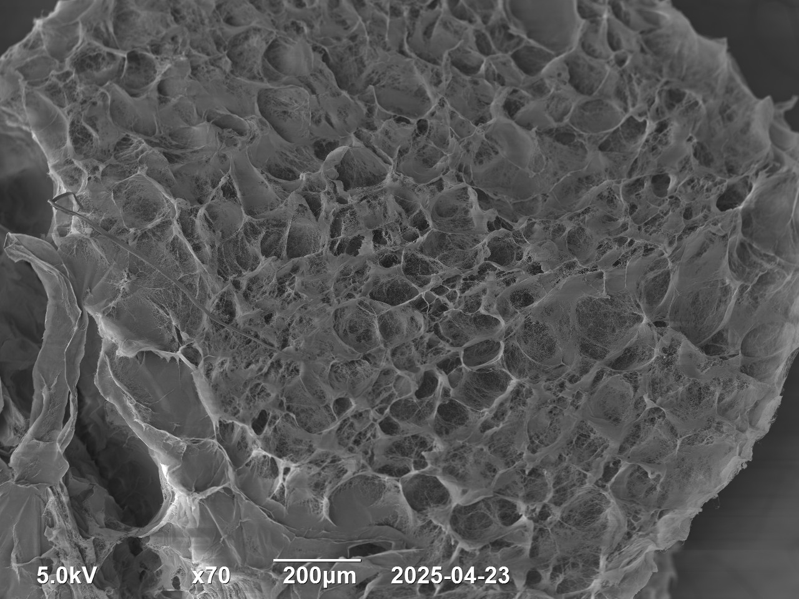
Porous Beads
Fermentation-Formed. Highly Hydrated.
Spherical structures with exceptional water-holding capacity (exceeding 100x their dry weight). A versatile platform for hydration and active-ingredient delivery.
- Cellular Architecture: Deep porous internal structure.
- Customizable Size: Ranging from 0.5 mm to 5 mm.
- Agriculture & Care: Water-retention and nutrient carriers.
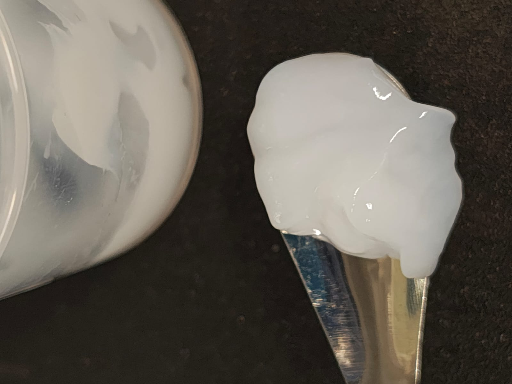
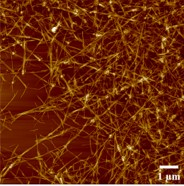
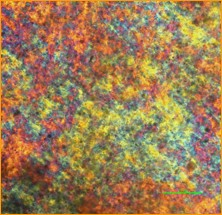
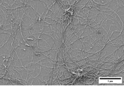
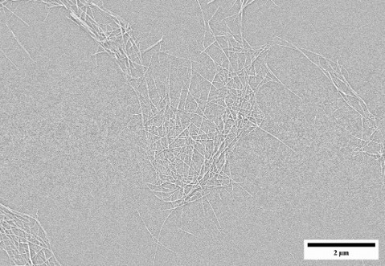
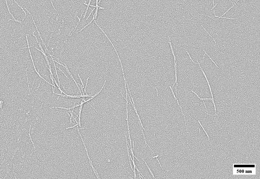
Nanocellulose Slurries
Nanoscale Cellulose. Functional Chemistry.
Aqueous suspensions based on cellulose nanofibres (CNFs) and nanocrystals (CNCs). Can be functionalised using acids, oxidising agents, and deep eutectic solvents.
- Rich Chemistry: Abundant hydroxyl groups.
- Advanced Processing: Coatings, films, and nanocomposites.
- Environmental Use: Adsorption, separation, and filtration.
Expertise in Microencapsulation
Advanced Carrier & Controlled-Release Solutions
Microencapsulation is revolutionizing active ingredient delivery in the pharmaceutical, cosmeceutical, and personal care industries. At Rekrite, we specialize in formulating trigger-responsive delivery systems that protect sensitive compounds and release them precisely when and where they are needed.
- Active Protection: Shields sensitive bio-actives, vitamins, and APIs from environmental degradation.
- Controlled Release: Advanced matrices responsive to pH, thermal, or mechanical friction triggers.
- Custom Formulations: Purpose-built and scaled for seamless integration into industry-specific products.
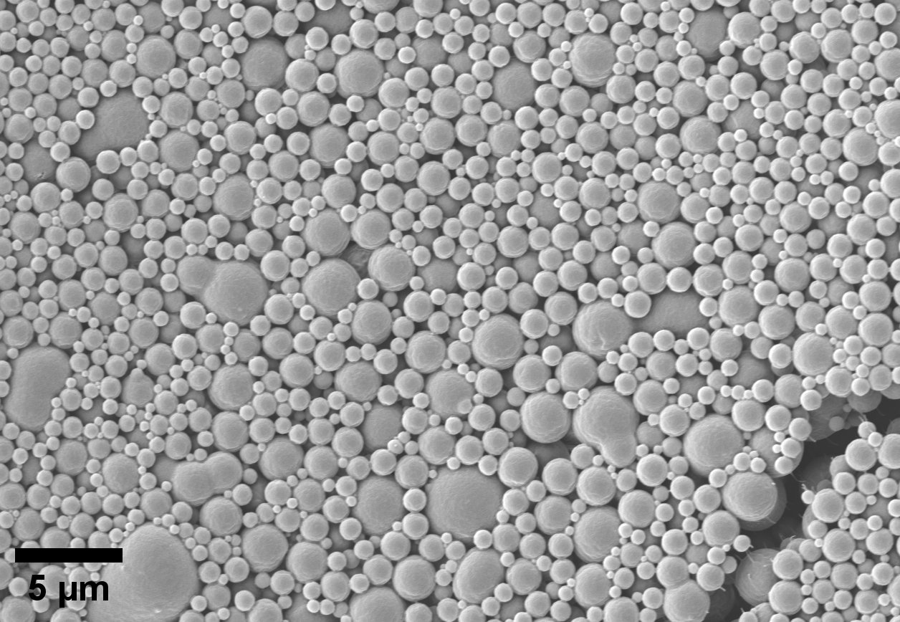
Cultivating a Shared Material Future
True transformation doesn't happen in isolation. Let's pool our capabilities to evaluate ideas early, solve technical challenges, and co-create next-generation bioproducts faster.
Re-AI Solution Matcher
Describe your application or industry challenge, and Re-AI will recommend the ideal bacterial cellulose platform for your project.
13+ Years of Expertise
Leverage over a decade of deep research in tuning, functionalizing, and scaling bacterial nanocellulose from IIT Hyderabad.
Material Tailoring
We engineer BNC across multiple physical formats to perfectly match your exact processing conditions and product goals.
Invest in the Future of Bio-Materials
Rekrite Herbaceuticals is actively seeking strategic capital to scale our operations. We have successfully transitioned from fundamental research to tangible manufacturing capabilities, establishing India as a hub for advanced bacterial cellulose production.
Investment & Partnership Avenues
Are you an angel investor, VC, or industrial partner ready to scale next-generation materials?